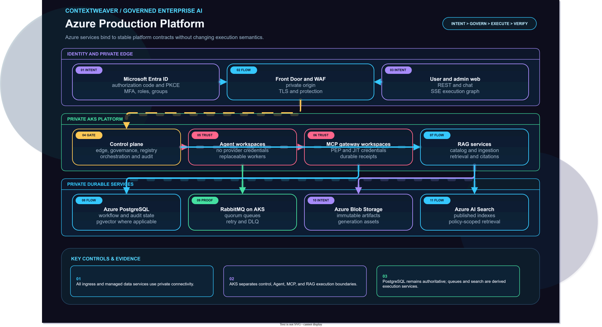

Tenant identity, MFA, Conditional Access, groups, roles, and workload identities.
Security boundary
Microsoft Entra ID
Confidential BFF
Whole-graph preflight
Runtime enforcement
Credential broker
Private networking
Entra authenticates; policy authorizes every execution
The browser uses a confidential BFF authorization-code flow with PKCE and receives an opaque secure session. Authentication is never ambient execution authority.
Server-side token handling, HttpOnly session cookies, CSRF protection, and no reusable downstream token in the browser.
Service, workflow, Agent, MCP, tool, model, RAG, fallback, and compensation authority is frozen into the immutable plan.
Every protected node and side effect is reauthorized immediately before execution.
Trusted gateways obtain short-lived scoped tokens from Key Vault/OpenBao references; Agents never possess credentials.
Private AKS, private endpoints, restricted egress, workload identity, network policy, and encrypted service paths.
Azure service mapping
Cloud bindings beneath stable platform contracts
Provider services can change without changing the durable execution protocol or capability contracts.
ComputePrivate AKS node pools for edge, control plane, queue workers, RAG, gateways, and isolated Agent/MCP runtime namespaces.
Durable stateAzure Database for PostgreSQL Flexible Server HA for runs, tasks, leases, timers, HITL, inbox/outbox, checkpoints, registry, policy, and pgvector.
MessagingRabbitMQ quorum queues on AKS or a validated managed-compatible topology with persistent messages, confirms, retries, DLQ, and redelivery.
ArtifactsAzure Blob Storage for immutable documents, large task payloads, results, evidence, citations, packages, and release artifacts.
ModelsAzure OpenAI behind the Model Gateway, with approved deployments, regions, retention policy, redaction, budgets, and fallback rules.
RAG searchPostgreSQL full-text search plus pgvector initially; Azure AI Search is introduced only when measured scale or search requirements justify it.
SecretsOpenBao/Vault as the portable credential broker, optionally backed by Azure Key Vault and External Secrets.
OperationsPrometheus, Grafana, Loki, OpenTelemetry, Azure Monitor integration, immutable audit, SLOs, alerts, and recovery drills.
Production topology
Durable execution is visible in the Azure diagram
The scheduler does not call Agents or MCPs directly. It commits work, publishes queue commands, and relies on replaceable workers and durable state.

Current truth
Production target, not a claim that every service is deployed
Status: local platform foundations and selected application capabilities are implemented. The complete Entra BFF, universal runtime authorization, workflow coordinator, inbox/outbox topology, leases, durable timers, persistent HITL service, MCP reconciliation, Saga compensation, and full recovery suite remain production-target work. The documentation keeps this distinction explicit.